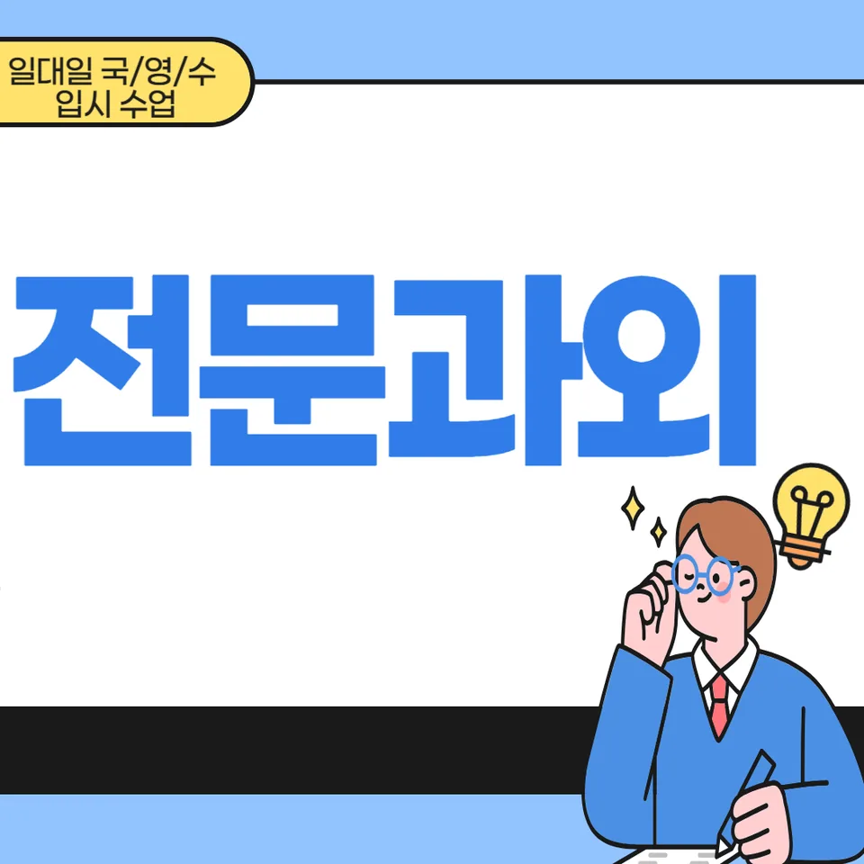

PageType : SUBJECT
URL : /경기도과외/의정부시과외/장암동과외/장암동수학과외/
지역 교육환경이 수학 학습에 미치는 영향
장암동수학과외를 찾는 학생들은 대체로 학교 수업 외에 스스로 공부 시간을 확보해야 한다는 현실을 먼저 마주합니다. 장암동수학과외는 지역 학습 분위기에 맞춰 “수업에서 끝내지 않기”를 전제로 학습 루틴을 점검하는 데 초점이 맞춰집니다. 같은 단원을 공부해도 수학 학습의 속도는 가정의 공부 환경, 주변 스터디 유무, 학원·과외의 밀도에 따라 달라지기 때문에 장암동수학과외에서는 개인별로 필요한 복습 구간을 분명히 나눕니다.
학교가 끝난 뒤 집중 시간이 짧아지는 시기에는, 개념 확인이 늦어져 다음 진도로 넘어갈 때 부담이 커지곤 합니다. 이때 장암동수학과외의 수학 학습 진행은 “어제 배운 것”이 오늘의 문제에서 자연스럽게 작동하는지 확인하는 방식으로 이어집니다. 특히 학교마다 수업 운영이 다른 날에는, 학생이 놓친 흐름을 스스로 복원할 수 있게 학습 습관을 먼저 다지는 과정이 중요해집니다.
학교별 평가 방식과 학습 방향
수학 내신과 수행평가는 학교마다 강조점이 달라 학생의 준비 방식도 달라집니다. 어떤 학교는 서술형과 과정에 가중치를 두는 편이고, 다른 학교는 선택형 비중이 커서 정확도 중심의 공부가 자리 잡기 쉽습니다. 장암동수학과외에서는 학교 시험 유형을 기준으로 공부 방향을 조정하면서도, 수학 개념을 계산 절차로만 이해하지 않도록 학습의 결을 맞춥니다.
평가가 바뀌는 주기에는 학생이 “문제 풀이에만 집중하면 된다”는 생각에 빠지기도 합니다. 그러나 수행평가나 서술형이 섞이면, 문제에서 요구하는 관찰 요소를 놓치지 않는 태도가 필요합니다. 장암동수학과외는 이 지점에서 학생이 문제 해결 과정을 말로 정리하는 연습을 통해, 같은 주제라도 학교 평가 방식에 맞춰 답을 구성할 수 있게 돕습니다.
학생들이 수학을 어려워하는 주요 원인
학생이 수학을 어렵다고 느끼기 시작하는 시점은 대개 “개념과 문제 사이의 연결”이 끊길 때입니다. 장암동수학과외를 통해 상담 기록을 살펴보면, 많은 학생이 문제를 풀지 못했다기보다 ‘어떤 개념을 써야 하는지’가 흐려져 있습니다. 이 흐림은 학습이 누적되며 커지기 때문에, 단순 암기 위주의 공부가 오래 지속될 때 더 두드러집니다.
또 다른 원인은 오답이 생긴 뒤 분석이 짧게 끝나는 데 있습니다. 학생은 틀린 문제를 다시 풀지 않고 넘어가거나, 정답만 확인하며 마무리합니다. 장암동수학과외에서는 오답을 “왜 틀렸는지”를 언어로 정리하게 하고, 실수의 유형이 반복되는지 추적하는 방식으로 복습의 질을 높입니다. 이 과정이 쌓이면 학생은 수학 학습에서 자신의 약점을 정확히 감지하는 감각을 갖게 됩니다.
장암동수학과외를 고민하는 학부모 역시 대체로 같은 지점을 걱정합니다. 공부 시간은 늘었는데 성적 변동이 크다는 불안이 생기면, 계획을 더 촘촘히 세우기보다 학습 흐름을 점검하는 쪽이 먼저 필요해집니다. 장암동수학과외는 학교 수업 직후 복기부터 시작해, 개념이 활용되는 순간을 놓치지 않게 연결해 줍니다.
학년 변화에 따른 수학 학습의 차이
학년이 올라가며 수학의 부담은 단순한 난도 상승만으로 생기지 않습니다. 단원 간 연결이 촘촘해지고, 시험에서는 단일 유형보다 혼합 형태가 늘어나면서 학생의 사고 과정이 더 요구됩니다. 장암동수학과외에서는 같은 공부량을 가정하더라도 학습 방식이 달라져야 한다는 점을 먼저 정리합니다. 예를 들어 중간 단계에서는 개념 이해가 우선이라면, 이후 단계에서는 개념을 문제 해결로 전환하는 속도와 정확도가 동시에 중요해집니다.
또래의 공부 분위기가 강한 시기에는 “문제를 많이 풀어야 한다”는 압박이 생기기 쉽지만, 실제로는 복습과 학습 관리가 성과를 좌우합니다. 장암동수학과외에서는 시험 기간이 다가올수록 계획적인 학습 습관이 정렬되는지 확인하며, 시간을 효율적으로 쓰는 방법을 학생 상황에 맞게 조정합니다. 공부 시간이 길어지는 방식이 아니라, 필요한 구간을 먼저 선별하는 방식이 자리 잡게 됩니다.
꾸준한 학습이 실력으로 이어지는 과정
수학에서 자신감이 생기는 과정은 하루 성취가 아니라 “반복 확인을 통해 이해가 굳어지는 흐름”에서 만들어집니다. 장암동수학과외에서는 개념을 이해한 뒤 곧바로 문제 해결로 이어지게 하되, 같은 유형을 여러 번 보게 하는 방식보다 복습의 타이밍을 다르게 가져갑니다. 이 변화는 학생이 시험 전날에 몰아서 공부하는 패턴에서 벗어나는 데 도움이 됩니다.
학부모가 자주 느끼는 교육 고민은 ‘꾸준함’이 통제되지 않는다는 점입니다. 일정이 흔들리면 공부가 끊기고, 끊긴 구간에서 다시 따라가기가 어려워집니다. 장암동수학과외는 하루 단위의 공부습관을 작은 목표로 쪼개고, 학교 숙제와 시험 범위에 맞춘 학습 계획을 꾸준히 유지하는 구조를 만듭니다. 이렇게 쌓인 학습은 사고력과 문제 해결 능력으로 자연스럽게 이어집니다.
문제 해결력을 키우는 학습 습관
문제 해결력이 성장하는 과정은 ‘풀이를 아는 것’보다 ‘접근을 선택하는 것’에서 시작됩니다. 장암동수학과외에서는 문제를 만났을 때 학생이 어떤 단서를 우선 확인하는지부터 점검합니다. 학생은 먼저 조건을 정리하고, 필요한 개념을 떠올린 뒤, 답에 닿는 경로를 스스로 선택하는 연습을 하게 됩니다. 이 경험이 누적되면 비슷한 문제에서 더 빨리 사고가 정렬됩니다.
오답을 분석하고 반복을 줄이는 과정도 문제 해결력의 핵심입니다. 같은 실수가 반복되는 학생은 대부분 “어떤 실수가 발생했는지”를 구체적으로 기록하지 않습니다. 장암동수학과외에서는 오답에서 패턴을 찾고, 복습할 때는 정답을 다시 베끼는 방식이 아니라 사고 과정을 다시 세우는 연습으로 연결합니다. 결과적으로 학생은 시험에서 낯선 변형을 만나도 흔들림이 줄어듭니다.
복습과 학습 관리가 중요한 이유
복습이 학습 성과로 이어지는 과정은 ‘다시 보는 횟수’보다 ‘다시 보는 이유’에 달려 있습니다. 장암동수학과외에서는 복습을 단원 전체로 뭉뚱그리지 않고, 학교에서 이미 나온 개념이 문제에서 어떻게 작동하는지 확인하는 형태로 구성합니다. 학생은 복습을 부담으로 느끼기보다 학습의 빈틈을 메우는 도구로 받아들이게 됩니다.
시험 기간에 들어가면 학습 패턴이 달라지면서, 쉬운 문제는 빨리 지나치고 어려운 문제에만 시간을 쓰는 경향이 생깁니다. 이때 복습이 없는 상태로 시간만 늘어나면 피로가 누적되고 실수가 늘 수 있습니다. 장암동수학과외는 시험 전후의 학습 흐름을 구분해, 시간 효율을 높이면서도 개념과 오답이 연결되도록 관리합니다. 자기주도학습이 자리 잡는 과정은 결국 이렇게 작은 조정이 누적될 때 자연스럽게 만들어집니다.
- 학교 수업과 시험 범위에 맞는 학습 계획을 세우고 있는지 확인합니다.
- 개념을 암기하는 데 그치지 않고 문제 해결 과정에 활용하고 있는지 점검합니다.
- 틀린 문제를 다시 풀어보며 실수의 원인을 꾸준히 분석합니다.
- 단기 성과보다 지속적인 복습과 학습 습관을 유지하고 있는지 살펴봅니다.
수학 학습에서 확인해야 할 핵심 요소
학생마다 성장 속도는 다르지만, 학습 과정에서 확인해야 할 요소는 비교적 명확합니다. 장암동수학과외에서는 첫째로 개념을 이해했는지, 둘째로 그 이해가 문제 해결로 전환되는지, 셋째로 오답이 쌓일 때 복습이 끊기지 않는지를 순서대로 점검합니다. 이 세 가지가 연결되면 사고력이 성장하는 학습 경험이 유지됩니다.
학교와 가정에서 이어지는 학습 환경도 중요합니다. 수업 시간에 집중을 유지하는 학생은 많지만, 그 집중이 공부 습관으로 이어지지 않으면 금방 흔들립니다. 장암동수학과외는 교육 현장에서 자주 관찰되는 변화, 즉 수업 직후의 짧은 복기가 사라질 때 생기는 이해 격차를 기준으로 학습 조절을 돕습니다. 또한 자기주도학습을 만들기 위해 계획적인 학습 습관과 복습의 타이밍을 함께 정렬합니다.
지역별 교육 특성과 학습 문화가 다를 때도 본질은 같습니다. 학생은 같은 문제를 풀어도 접근이 다르고, 같은 시간을 써도 우선순위가 다릅니다. 장암동수학과외에서는 학습 계획을 꾸준히 유지하는 과정과 문제 해결에서 필요한 관찰 요소를 같이 다뤄, 꾸준한 학습이 변화로 연결되게 합니다. 결국 공부습관은 시험을 위한 준비를 넘어 사고의 방식이 되며, 학부모는 이 흐름을 보며 교육 고민의 방향을 다시 잡게 됩니다.
자주 묻는 질문
수학 학습은 언제부터 체계적으로 준비하는 것이 좋을까요?
단원이 바뀌기 전, 학교에서 개념의 연결이 시작되는 시점부터 준비하는 편이 안정적입니다. 중요한 것은 진도를 앞당기는 것보다 복습 타이밍을 먼저 확보하는 방식입니다.
학교 내신과 수행평가는 어떻게 함께 준비하면 좋을까요?
평가에서 요구하는 형태를 기준으로 공부 우선순위를 정하고, 개념 이해가 실제 답 구성으로 이어지는지 확인하며 준비하는 흐름이 좋습니다.
수학 개념이 부족한 학생도 학습 흐름을 따라갈 수 있을까요?
가능합니다. 다만 부족한 개념을 한 번에 메우기보다, 학교 수업에서 사용되는 순간에 맞춰 연결을 복원해 가는 방식이 효과적입니다.
문제 해결력은 어떤 과정을 통해 향상될 수 있을까요?
조건을 정리하고 접근을 선택하는 습관을 만들고, 오답을 분석한 뒤 사고 과정을 다시 세우는 과정을 반복할 때 성장합니다.
꾸준한 학습 습관은 어떻게 만들어갈 수 있을까요?
시험 범위와 수업 흐름에 맞춘 짧은 계획을 세우고, 복습과 오답 정리를 고정 루틴으로 두는 방식이 자리 잡는 데 도움이 됩니다. 장암동수학과외에서는 이 루틴을 학생의 현실 시간에 맞춰 조정합니다.
